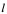
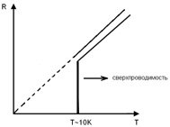

ПРОВЕРКА
ЗАКОНА ОМА С ПРИМЕНЕНИЕМ МЕТОДА
НАИМЕНЬШИХ
КВАДРАТОВ
Краткая теория: в
данной лабораторной работе предлагается экспериментальная проверка закона Ома с
использованием статистического метода обработки результатов – метода наименьших квадратов.
1.
Метод наименьших квадратов
В лабораторных работах по физике часто
возникает необходимость измерения физических величин, находящихся в
функциональной зависимости: . Экспериментальным путем определяются данные, а информация о
подтверждении теоретического вида физического закона извлекается из графиков,
построенных по полученным данным. В любом эксперименте присутствует погрешность
измерений (случайная или приборная), поэтому точки, нанесенные на координатную
плоскость, будут разбросаны относительно предполагаемой кривой. Если график строить,
непосредственно соединяя экспериментально полученные точки, то зачастую он
будет иметь вид ломаной линии, однако в большинстве случаев функции,
описывающие процессы в природе, являются гладкими. Значит, необходимо подобрать
такую функцию , которая наилучшим образом выражала бы экспериментальную
зависимость измеряемых величин. В зависимости от аналитического вида функции,
связывающие между собой физические величины, используют различные методы
статистической обработки результатов измерений.
Наиболее простым видом функциональной
зависимости является прямо пропорциональная зависимость между физическими
величинами вида:
.
В данном случае удобно воспользоваться методом наименьших квадратов, основанном
на минимизации суммы квадратов
отклонений функции от искомых переменных. Другими
словами метод наименьших квадратов позволяет по экспериментальным данным
подобрать такую аналитическую функцию, которая проходит настолько близко к
экспериментальным точкам, насколько это возможно.
Для того чтобы найти , соответствующее идеальной прямой, нужно составить сумму
квадратов отклонений экспериментальных точек от этой прямой:
(1)
Величина S всегда положительна и оказывается тем меньше, чем
ближе к прямой лежат экспериментальные точки. Необходимо найти такой
коэффициент k, при котором при котором S имеет
минимальное из всех допустимых значений:
(2)
Для
отыскания экстремума дифференцирование ведется по параметру, от которого
зависит, как пройдет график. Используя правила дифференцирования суммы и
сложной функции (выполнить
самостоятельно), получим выражение для :
 (3)
(3)
Полученное
значение параметра позволяет провести
прямую, наиболее близко к экспериментальным точкам (см. рис. 1)
Рис. 1 Экспериментальные точки при измерении величин
Вычисления показывают, что стандартная
ошибка s(k)
определения величины k при
этом равна:
(4).
Абсолютная погрешность найдётся по
формуле:
,
где - коэффициент
Стьюдента.
2. Электрический ток. Закон Ома
Электрический ток – это упорядоченное
движение зарядов. За направление тока выбрали направление движения
положительных зарядов.
Для возникновения и существования
электрического тока необходимо два условия:
- наличие свободных носителей заряда;
- наличие электрического поля.
Основной характеристикой электрического
тока является – сила тока – физическая величина, численно равная заряду,
переносимому через поперечное сечение проводника за единицу времени:
Для постоянного тока (сила и направление
которого не изменяются со временем), сила тока может считаться по формуле:
Единица измерения силы тока – ампер [А].
Площадь поперечного сечения проводника
может быть неоднородной, поэтому вводят в рассмотрение еще одну характеристику
электрического тока – плотность тока – физическую
величину, определяемую силой тока, проходящего через единицу площади
поперечного сечения проводника, перпендикулярного направлению тока.
[А/м2] ;
Немецкий физик Георг Ом экспериментально установил следующую зависимость силы тока
от разности потенциалов электрического поля, перемещающего заряды в проводнике (напряжения
на концах участка проводника):
 ,
,
где R – электрическое сопротивление проводника (единица
измерения Ом). Данная формула
выражает закон Ома для однородного
участка цепи: сила тока в проводнике
прямо пропорциональна напряжению на концах данного проводника и обратно
пропорциональна сопротивлению проводника.
Сопротивление проводников обусловлено
тепловыми (хаотическими) колебаниями атомов в узлах кристаллической решетки,
затрудняющими упорядоченное движение свободных электронов.
Сопротивление проводников зависит от
материала, из которого он изгот овлен и его
геометрических размеров. Для однородного линейного проводника его сопротивление
рассчитывается по формуле:
где  - длина проводника, S
– площадь его поперечного сечения, - величина,
характеризующая материал проводника - удельное сопротивление.
Для большинства металлов сопротивление
(удельное сопротивление) растет с температурой по линейному закону:
; где - сопротивление
(удельное сопротивление) при - температура по
шкале Цельсия, - термический
коэффициент сопротивления, равный .
График
зависимости сопротивления проводника от температуры представлен на рис. 2.

Рис.
2. График зависимости сопротивления проводника от температуры
В электрических цепях используют два вида соединения
проводников – последовательное и параллельное.
Последовательное
подключение:
.
Параллельное подключение:


.
3. Применение
метода наименьших квадратов для экспериментальной проверки закона Ома
Закон Ома устанавливает линейную
зависимость между силой тока и напряжением. Запишем закон Ома в следующем виде:
 .
.
Величина называется
электрической проводимостью вещества, измеряется в сименсах (См).
Экспериментально проверить закон Ома для
участка цепи – значит убедиться в том, что для данного проводника с неизменными
размерами при неизменной температуре отношение силы тока в проводнике (I) к напряжению (U) на его концах есть величина постоянная.
Пусть результаты измерений силы тока в
проводнике и напряжения на его концах представлены в виде таблицы:
|
U |
U1 |
U2 |
U3 |
U4 |
… |
Un |
|
I |
I1 |
I2 |
I3 |
I4 |
… |
In |
Неизбежные ошибки эксперимента приводят
к тому, что точки Ii, Ui ; при
построении графика не лежат на одной прямой. Значение R
(или .) может быть
найдено из любой пары значений Ii, Ui,
наличие n пар приводит к
появлению n несовместимых уравнений для нахождения R.
Используем метод наименьших квадратов
(см. формулы 1-4).
1. Рассчитываем отклонение произвольной точки от
идеальной прямой:
2.
Рассчитываем сумму квадратов отклонений:
3. Метод
наименьших квадратов утверждает, что для следует выбирать такое
значение, при котором S имеет
минимальное значение, т.е. ds/d=0, откуда следует,
что:
3.
Абсолютная
погрешность (доверительный интервал) определения рассчитаем по формуле:
.